Cisco Catalyst 9300 Series Switches
Source: https://www.cisco.com/c/en/us/products/switches/catalyst-9300-series-switches/index.html
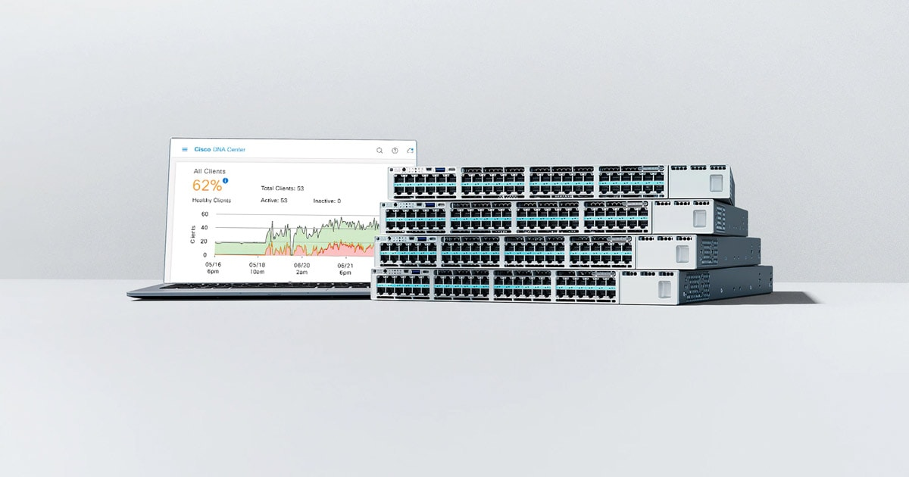
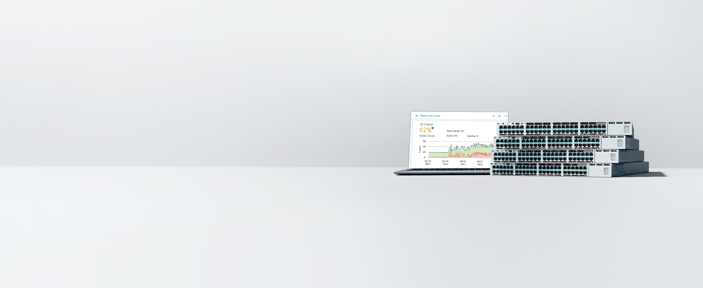
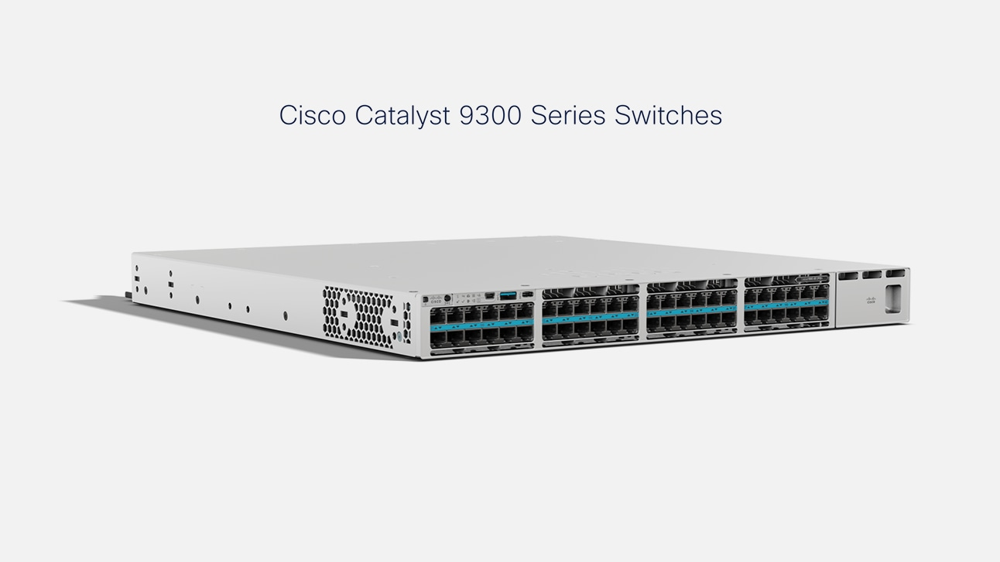

Overview / functionality
Cisco Catalyst 9300 Series Switches are built for security, IoT, and the cloud. Build a secure foundation that unlocks automation, simplicity, and insights.
- Manage your network your way with Cisco Catalyst 9300 Series Switches—on-premises, in virtual environments, or from the cloud—with secure, scalable performance.
- Deliver a more secure, sustainable experience that combines speed and scale with advanced automation and analytics.
- Get the bandwidth, speed, scale, and automation you need to support your hybrid teams, however they choose to work.
- Empower your network with built-in encryption, ASAc Firewall on board, and advanced AI/ML for continuous zero-trust security.
- Deliver exceptional network experiences with the Cisco Catalyst Center on-premises platform, Meraki cloud-managed dashboard or cloud monitoring for Catalyst.
- Use the network as the foundation for smarter, more sustainable buildings that are energy-efficient and promote the occupants' well-being. New ENERGY STAR certified models.
- C9300X-48HX. Built for secure Wi-Fi 6/6E high-speed access and beyond, with 90W PoE for Cisco smart building deployments. 48-port 10GBASE-T, 10G/5G/2.5G/1G/100M multigigabit. Based on Cisco UADP 2.0sec ASIC, with 100G hardware-based IPsec. Orderable with Meraki cloud-management experience.
- C9300X-48TX. Built for secure Wi-Fi 6/6E high-speed access and beyond. 48-port 10GBASE-T, 10G/5G/2.5G/1G/100M multigigabit, data only. Based on Cisco UADP 2.0sec ASIC, with 100G hardware-based IPsec. Orderable with Meraki cloud-management experience.
End-of-Sale / End-of-Life (EOS / EOL)
No EOS/EOL notice linked on this page.
Check Cisco's official EOS/EOL listingPricing
No price is published on this page. Cisco list prices are normally available only through Cisco Commerce / authorized partners.
Catalyst 9200 Switches Overview
Source: https://www.cisco.com/c/en/us/products/switches/catalyst-9200-series-switches/index.html
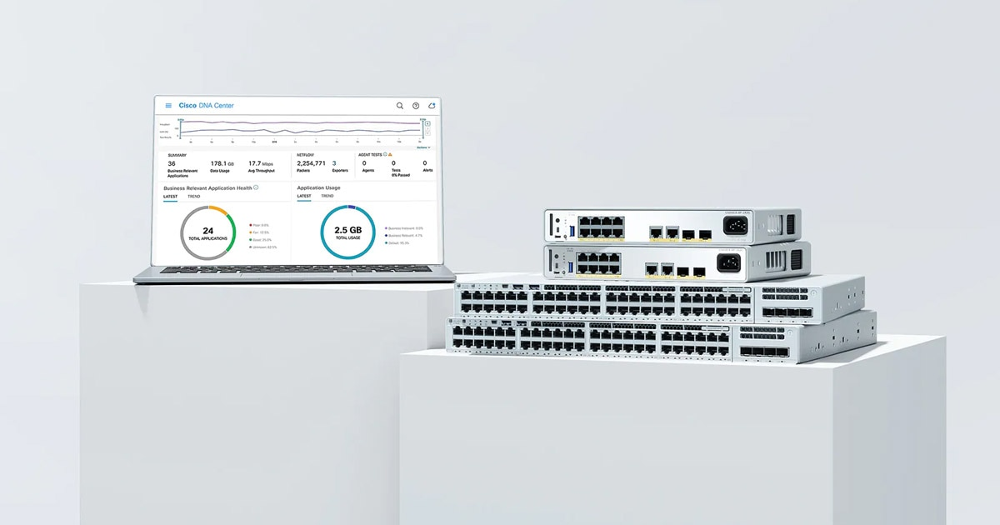
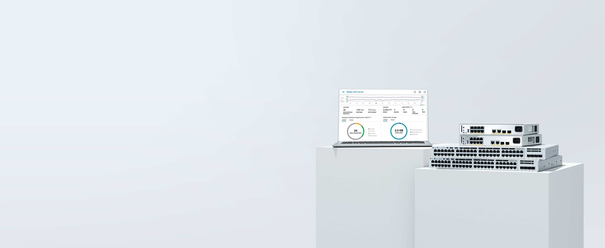
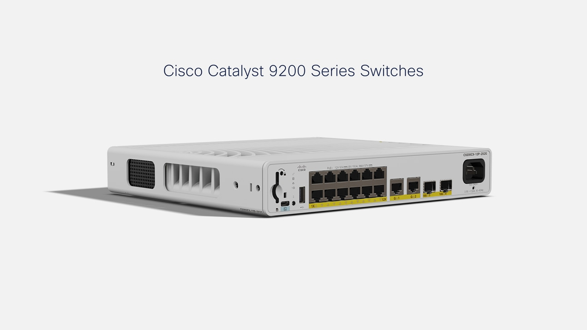
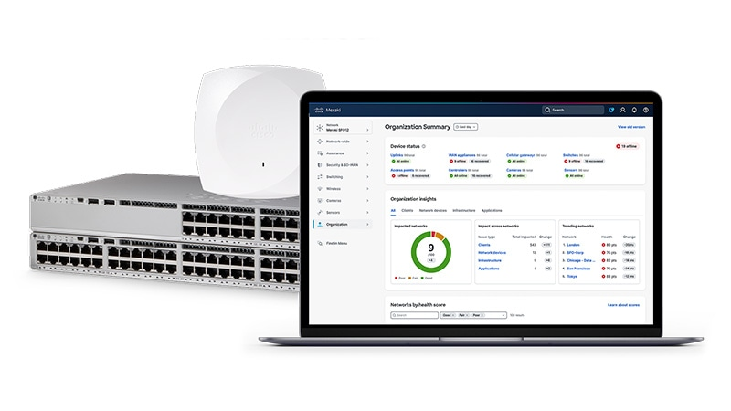
Overview / functionality
Cisco Catalyst 9200 Series Switches are built for security, IoT, and the cloud. Transform your enterprise network with best in class connectivity.
- Start transforming your network. Get enterprise-grade security, reliability, connectivity, and power for your hybrid branch offices.
- Protect your network and your data with advanced security features such as link encryption and segmentation. Turn on real-time data to unlock the power of your network.
- Work is no longer a place—it's what you do. Deploy a powerful platform with the security, performance, and automation to support your workforce's people, wherever they are.
- Empower your network with built-in encryption and advanced AI/ML for continuous zero-trust security.
- On-premises, virtual machine, or cloud: Choose the platform that works best for you. Deliver exceptional network experiences with the Cisco Catalyst Center platform or cloud monitoring for Catalyst.
- Optimize energy efficiency and workplace wellness using your network as the foundation for smarter, more sustainable buildings. New ENERGY STAR certified models.
- C9200L-24T-4G-M, C9200L-24T-4X-M, C9200L-48T-4G-M, C9200L-48T-4X-M. Ideal for secure branch and entry-level enterprise environments. Managed natively from the cloud through the Meraki dashboard.
- C9200L-24P-4G-M, C9200L-24P-4X-M, C9200L-48P-4G-M, C9200L-48P-4X-M, C9200L-48PL-4G-M, C9200L-48PL-4X-M. Optimized for secure deployments of IoT and smart building technology. Managed natively from the cloud through the Meraki dashboard.
End-of-Sale / End-of-Life (EOS / EOL)
No EOS/EOL notice linked on this page.
Check Cisco's official EOS/EOL listingPricing
No price is published on this page. Cisco list prices are normally available only through Cisco Commerce / authorized partners.
Cisco Catalyst 9500 Series Switches
Source: https://www.cisco.com/c/en/us/products/switches/catalyst-9500-series-switches/index.html
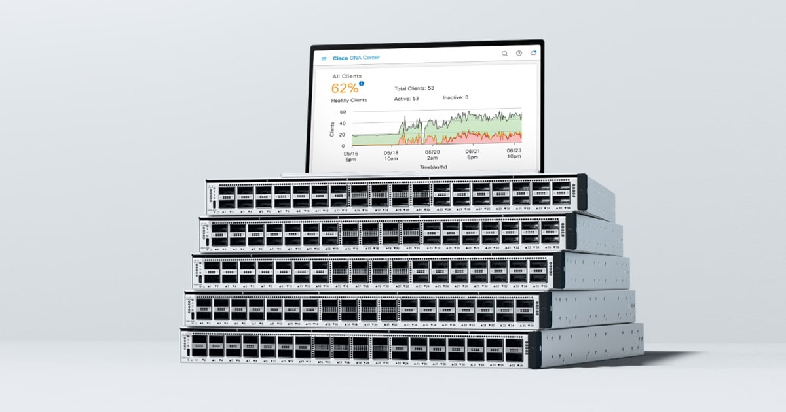
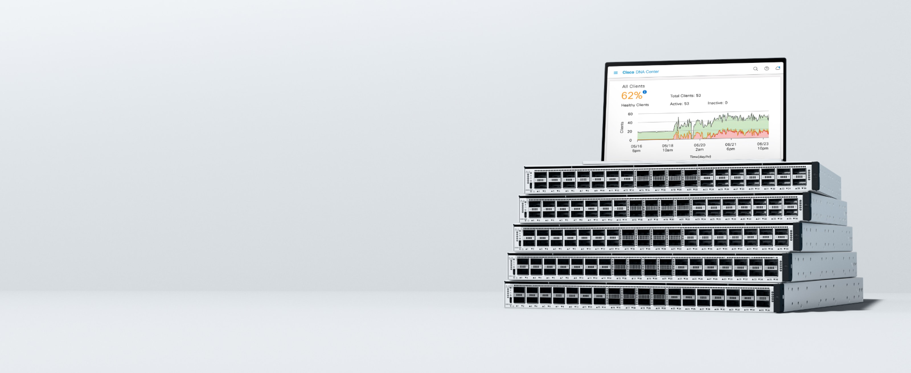
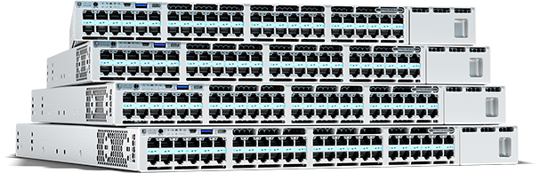
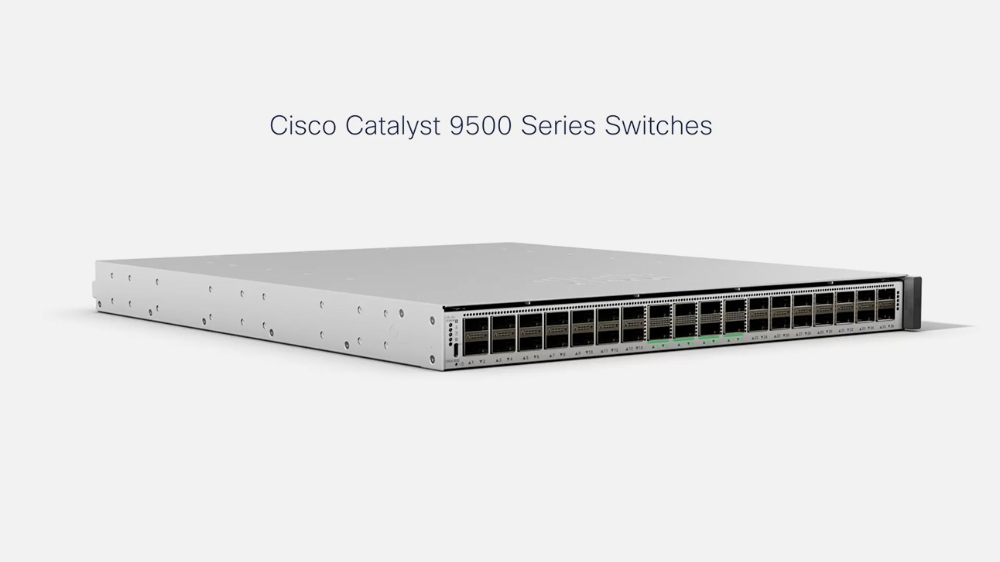
Overview / functionality
Catalyst 9500 Series are Cisco's leading fixed-core enterprise network switches, built for security, IoT, and the cloud.
- Boost your network and save. Move to 100G or 400G pluggable optics today.
- With security and insights built in, these fixed-core enterprise switches make networking simple.
- Step it up with a powerful platform that has the bandwidth, speed, scale, and automation to support today's workforce.
- More power plus artificial intelligence and machine learning mean continuous security anytime, anywhere.
- Monitor and manage exceptional network experiences with Cisco Catalyst Center or cloud monitoring for Catalyst.
- Use the network as the foundation for smarter, more sustainable buildings that are energy efficient and promote the occupants' well-being.
- C9500X-28C8D. High-density fiber models for campus core and distribution. 28-port 100G/40G (QSFP28) and 8-port 400G/200G/100G (QSFP-DD). Based on Cisco Silicon One Q200 ASIC.
- C9500X-60L4D. High-density fiber models for campus distribution. 60-port 50G/25G (SFP56) and 4-port 400G/200G/100G (QSFP-DD). Based on Cisco Silicon One Q200 ASIC.
End-of-Sale / End-of-Life (EOS / EOL)
No EOS/EOL notice linked on this page.
Check Cisco's official EOS/EOL listingPricing
No price is published on this page. Cisco list prices are normally available only through Cisco Commerce / authorized partners.